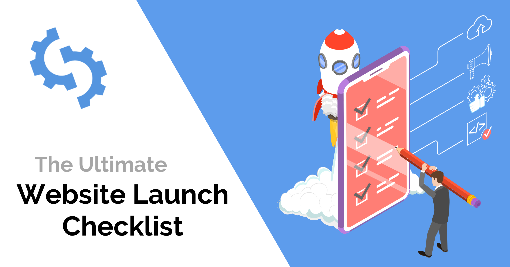

A small checklist for self-checking landing pages
By Amir Aimurzayev on 15 Feb 2020

No alien is going to answer that question; it is right here in front
of you. Ok, we know what you are thinking. Where is it? We agree the
essential elements of developing an ultimate Marketing landing page
are too scattered, misleading lots of developers. That is why we
have come up with an age-old way to keep us focused. A checklist may
be old-school but is always a winner. Best is to get started with
our 30 point checklist:
1) Relevant content: Ask yourself how a potential customer lands on
your Landing Page. The answer is simple- with a keyword search. Now
it is your task to ensure Landing Page offers the customer a reason
to stay and engage on the landing page. How you achieve is no rocket
science. Make sure you use the most appropriate keywords so that the
bounce rate is zero.
2) What does your headline say? The headline is the maker or breaker
of the relationship building. To the point and compelling headline
grab’s the customer’s attention. A headline must talk about one
unique aspect that is highly converting. Make sure you add a
sub-headline that supports the intent of the headline. The best
example of Sub-headline could be a statement of trust.
3) 10 Second Test A landing page must create engagement within the
initial 10 seconds. The visitor must never feel the need to go
through the content thoroughly. Just a glance should present the
entire picture otherwise the landing page defeats its marketing
purpose. Share your landing page with friends and get their views on
it. Wait till to get to the Ice-breaker tip on Point-8.
4) Image relevance: Want to glue your audience to the landing page?
A relevant image that talks about the headline are supremely
indispensable. Give a face to your voice now with the
high-definition image. A human brain connects faster to an image
rather than a text. Never let it be just ‘any image’, brainstorm and
find out the best that connects to your business and especially the
landing page context.
5) Logo Prominence: A logo is the face of your organization and is
pivotal in brand creation. Logo placement will depend on the
template you are using. I would recommend changing the template if
it pushes your Logo to a non-vital place. Even the pointers like
certifications and accreditations must be somewhere visible. Wait do
not forget your Tagline.
6) Follow the pointer pattern: Highlight your product or service
features with bold pointers; no one has time to find them through
the long paragraphs. Points make it easy to enhance the essential
elements and make it more readable. Never forget to keep the points
in a hierarchical fashion of importance.
7) Does your landing page offer the answers? The visitor came to the
search engine looking for an answer. Make sure he finds the answers
that he has been looking for. Present the content in a sorted way to
ensure he is convinced to take the relation ahead.
8) Highlight the offers Giving away freebies is the trend of the
time, and you must not miss out on it. Also, it is vital to
highlight the freebies – a free ebook, a discount or the dollar
value to ensure the visitor no longer remains a cold zone for you to
follow up and leaves his valuable contact information. Point-18 is a
vital extension of this point
9) A Sassy Testimonial: I agree the landing page is small enough to
give you space for a lengthy testimony. Why don’t you keep it short
and sassy? Pick up a testimonial that you feel connects most closely
with your target audience. It must deliver the trust they are
looking for in your services or products.
10) Engaging Pop-up: Pop-ups engage quite a lot of audience and give
you some extra space for marketing. Be careful how you time your
pop-ups. They must come one at a time so that the audience knows
what the page has to offer. The Pop-up must just give a gentle nudge
to enroll but it should never dis-engage the visitor.
11) Reinforcement techniques: So your headline did talk about your
key offering, but the visitors lose the focus very soon. Add an
element a lightbox, a pop-up or a reminder to reinforce what you
have to offer the clients and why they came to your landing page in
first place.
12) Pronounced Call to Action: From the community of landing page
developers, CTA is a life-saver. Let’s say your headline, pop-up
made an impact or did not break the ice; a compelling CTA will
change the game for you. Ensure it stand out in color, shape and the
content it has on the little button.
13) Landing Page and Website: Okay so you followed the above
checkpoints and it worked for you and the visitor moved to your
website from your landing page. Congrats!! But the game is not over
yet. Make sure your site and Landing Page are based on same themes
and color combinations otherwise you might leave the visitor utterly
confused.
14) Did you create urgency? Your landing page must create a sense of
emergency in the visitor so that he takes an almost instant action.
Few liners are enough to work it out for you.
15) Live count: It is a new thing but makes a huge impression.
Having a live counter that shows your sales, conversions or
downloads builds a trust in the visitor for your products and
services.
16) Take a feedback: We can never predict how a visitor will act
upon all the information and techniques we use. One thing is for
sure when you ask a customer for Feedback, he feels important and
will sneak in his details to you, and that’s all you wanted.
17) Short Page or Long Page testing: A Vital point to take into
consideration, before you start building pages, is to know whether
to build a long page or a smaller one. Deciding this element will
need a study into your target audience and competitors. Make sure
you do your research in-depth whether your audience likes long
descriptive pages or short and crispy content.
18) A new page for every promotion: Never put everything going on
around your products and services on a single page. Developing
extremely compelling landing pages has become very easy with ready
to use templates having page builder plugins. You can come up with a
dedicated page within minutes. Make sure you build a separate
landing page for each offer or occasion.
19) Focus on the solution rather than just features: A feature-rich
content may not build the connect as strong as a solution driven
content. The audience has problems, and they are looking for best
solutions rather than complex features.
20) What does your CTA say? As we said, the CTA can change the game
for your landing pages. It’s a candy you must offer to your audience
that compels them to click on the CTA. “Get Free E-book” or “Save
$10” are some examples of click-worthy CTA’s
21) Keep it clean: There is a fine line between keeping the page
clean and yet informative. An overcrowded page will just confuse
your audience and increase the bounce rate. Keep your eyes open.
22) Ad lead and page expectations: The audience land on your landing
page through an Ad right!! So does your landing page satiate the
curiosity that the Ad created in the audience? Keep it leveled to
ensure you build trust by directing them to the right information.
23) Responsive Page: 63% of your targeted audience is on mobile.
Make sure the landing page you build is responsive and remains fully
functional on the mobile or tablet.
24) SEO optimized: SEO never loses its importance. Although the
templates available for Marketing Landing Pages are inherently
optimized make sure you keep it well tested.
25) Is each feature tested? Nothing will mar the whole impression if
a feature does not work the way it is supposed to be. Go live only
when you extensively test the page and its elements.
26) Thorough Proofread: Why not ask a friend a favor? Let him read
through the entire content, placements, and features. A third
person’s point of view will always give you constructive feedback.
27) Showcase your Credibility: Have you been appreciated for any of
your services? A landing page is the best place to use your market
credibility as a business pitch.
28) Highlight the Contact points: As important as is a CTA, the
contact points are also critical. You must put it on a contrasting
background and must be visible instantly.
29) Short sign up form Keep your contact from short and take down
all the vital information. A long form bores the audience, and drop
rate may increase.
30) Keep it Professional: A professional and neat landing page works
like a charm and entrusts the audience with the professionalism you
will deliver them.
Best is to get started with the checklist and see how much revamping
does your non-performing landing page needs. To align your website
with our points and ease down the process of website making, you can
try our perfect HTML and CSS marketing builder OnePage Studio. This
drag-n-drop builder will let you implement all above essentials
through a visual interface. Still wondering how could your life
become easy?
Source: www.thedotstore.com